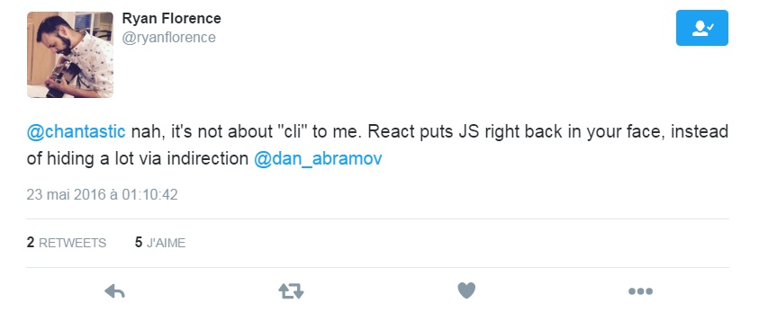
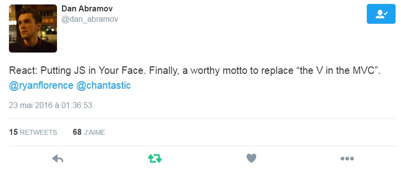

class: center, middle, inverse  # Putting JavaScript in your face! --- class: inverse, center, middle # Vincent Billey ### developper at [Synbioz](https://www.synbioz.com/) ### @Fenntasy #### http://vincent.billey.me/talks/react-putting-js-in-your-face --- class: inverse, center, middle  --- class: inverse, center, middle  --- class: inverse, center, middle # So, why the fuss about React? --- class: inverse, center ## ## React is a declarative way of presenting your UI --- class: inverse, center ## ### React is a declarative way of presenting your UI ## Everything is a component --- class: inverse, center ## ### React is a declarative way of presenting your UI ### Everything is a component ## React does not care about the rest of your code --- class: inverse, center ## ### React is a declarative way of presenting your UI ### Everything is a component ### React does not care about the rest of your code ## It can render in the browser, on the server or on mobile (with react-native) --- class: inverse background-image: url(assets/react-hello-world.png) --- class: inverse background-image: url(assets/react-hello-world-circled.png) --- class: inverse, middle ```html <!DOCTYPE html> <html> <body> <div id="app"></div> <script src="https://fb.me/react-15.1.0.js"></script> <script src="https://fb.me/react-dom-15.1.0.js"></script> <script> var App = React.createClass({ render: function() { return React.createElement( "div", null, "Hello World!" ); } }); ReactDOM.render( React.createElement(App), document.getElementById("app") ) </script> </body> </html> ``` --- class: inverse, middle ## The dreaded JSX ```html <!DOCTYPE html> <html> <body> <div id="app"></div> <script src="https://fb.me/react-15.1.0.js"></script> <script src="https://fb.me/react-dom-15.1.0.js"></script> <script src="https://cdnjs.cloudflare.com/ajax/libs/babel-core/5.8.23/browser.min.js"></script> <script type="text/babel"> var App = React.createClass({ render: function() { return ( <div>Hello World!</div> ); } }); ReactDOM.render(<App />, document.getElementById("app")) </script> </body> </html> ``` --- class: inverse, center ## JSX is just a DSL -- ```html return ( <div id="react"> <span>It's a-me, JSX!</span> <span>I don't bite</span> </div> ) ``` -- ## converts to ```javascript return ( React.createElement( "div", { id: "react" }, React.createElement("span", null, "It's a-me, JSX!"), React.createElement("span", null, "I don't bite") ) ) ``` --- class: inverse # React API - propTypes - getInitialState - getDefaultProps - this.setState - this.state - this.props ## Lifecycle hooks - shouldComponentUpdate - componentWillMount - componentDidMount - componentWillReceiveProps - componentWillUpdate - componentDidUpdate - componentWillUnmount - render --- class: inverse, center <img src="assets/react-router-logo.png" height="100" /> --- class: inverse, center <img src="assets/react-router-logo.png" height="100" /> ## The route is an important part of your state --- class: inverse, center <img src="assets/react-router-logo.png" height="100" /> ### The route is an important part of your state ## Inspired by Ember Router --- class: inverse, center <img src="assets/react-router-logo.png" height="100" /> ### The route is an important part of your state ### Inspired by Ember Router ## Declarative routing system --- class: inverse ```javascript import React from 'react' import { render } from 'react-dom' import { Router, Route, IndexRoute, Link, hashHistory } from 'react-router' const App = React.createClass({ render() { return ( <div><h1>App</h1> <ul> <li><Link to="/about">About</Link></li> <li><Link to="/inbox">Inbox</Link></li> </ul> {this.props.children} </div> ) } }) render(( <Router history={hashHistory}> <Route path="/" component={App}> <IndexRoute component={Home} /> <Route path="about" component={About} /> <Route path="inbox" component={Inbox} /> </Route> </Router> ), document.body) ``` --- class: inverse ```javascript import React from 'react' import { render } from 'react-dom' import { * Router, Route, IndexRoute, Link, hashHistory } from 'react-router' const App = React.createClass({ render() { return ( <div><h1>App</h1> <ul> <li><Link to="/about">About</Link></li> <li><Link to="/inbox">Inbox</Link></li> </ul> {this.props.children} </div> ) } }) render(( <Router history={hashHistory}> <Route path="/" component={App}> <IndexRoute component={Home} /> <Route path="about" component={About} /> <Route path="inbox" component={Inbox} /> </Route> </Router> ), document.body) ``` --- class: inverse ```javascript import React from 'react' import { render } from 'react-dom' import { Router, Route, IndexRoute, Link, hashHistory } from 'react-router' const App = React.createClass({ render() { return ( <div><h1>App</h1> <ul> <li><Link to="/about">About</Link></li> <li><Link to="/inbox">Inbox</Link></li> </ul> {this.props.children} </div> ) } }) render(( <Router history={hashHistory}> * <Route path="/" component={App}> * <IndexRoute component={Home} /> * <Route path="about" component={About} /> * <Route path="inbox" component={Inbox} /> </Route> </Router> ), document.body) ``` --- class: inverse ```javascript import React from 'react' import { render } from 'react-dom' import { Router, Route, IndexRoute, Link, hashHistory } from 'react-router' const App = React.createClass({ render() { return ( <div><h1>App</h1> <ul> <li><Link to="/about">About</Link></li> <li><Link to="/inbox">Inbox</Link></li> </ul> * {this.props.children} </div> ) } }) render(( <Router history={hashHistory}> <Route path="/" component={App}> <IndexRoute component={Home} /> <Route path="about" component={About} /> <Route path="inbox" component={Inbox} /> </Route> </Router> ), document.body) ``` --- class: inverse ```bash http://localhost:3000/ ``` ```javascript const App = React.createClass({ render() { return ( <div><h1>App</h1> <ul> <li><Link to="/about">About</Link></li> <li><Link to="/inbox">Inbox</Link></li> </ul> * <Home /> </div> ) } }) render(( <Router history={hashHistory}> * <Route path="/" component={App}> * <IndexRoute component={Home} /> <Route path="about" component={ <li><Link to="/about">About</Link></li>About} /> <Route path="inbox" component={Inbox} /> </Route> </Router> ), document.body) ``` --- class: inverse ```bash http://localhost:3000/about ``` ```javascript const App = React.createClass({ render() { return ( <div><h1>App</h1> <ul>{/* links... */}</ul> * <About /> </div> ) } }) render(( <Router history={hashHistory}> <Route path="/" component={App}> <IndexRoute component={Home} /> * <Route path="about" component={About} /> <Route path="inbox" component={Inbox} /> </Route> </Router> ), document.body) ``` --- class: inverse ```bash http://localhost:3000/message/42 ``` ```javascript const App = React.createClass({ render() { return ( <div> <h1>App</h1> <ul>{/* links... */}</ul> * <Message params={{ id: '42' }}/> </div> ) } }) render(( <Router history={hashHistory}> <Route path="/" component={App}> <IndexRoute component={Home} /> <Route path="about" component={About} /> <Route path="inbox" component={Inbox} /> * <Route path="messages/:id" component={Message} /> </Route> </Router> ), document.body) ``` --- class: inverse ```bash http://localhost:3000/inbox ``` ```javascript const App = React.createClass({ render() { return ( <div><h1>App</h1> <ul>{/* links... */}</ul> * <Inbox> * <InboxStats /> * </Inbox> </div> ) } }) render(( <Router history={hashHistory}> <Route path="/" component={App}> <IndexRoute component={Home} /> <Route path="about" component={About} /> * <Route path="inbox" component={Inbox}> * <IndexRoute component={InboxStats}/> <Route path="messages/:id" component={Message} /> </Route> </Route> </Router> ), document.body) ``` --- class: inverse, middle ## Transition hooks ```javascript const Home = React.createClass({ componentDidMount() { this.props.router.setRouteLeaveHook( this.props.route, this.routerWillLeave ) }, routerWillLeave(nextLocation) { // return false to prevent a transition // w/o prompting the user, // or return a string to allow the user to decide: if (!this.state.isSaved) return 'Your work is not saved!' + 'Are you sure you want to leave?' }, // ... }) export default withRouter(Home) ``` --- class: inverse, center, middle <img src="assets/redux-logo.png" height="200" /> --- class: inverse, center ## <img src="assets/redux-logo.png" height="100" /> ## Based on three principles --- class: inverse, center ## <img src="assets/redux-logo.png" height="100" /> ### Based on three principles ## Single source of truth --- class: inverse, center ## <img src="assets/redux-logo.png" height="100" /> ### Based on three principles ### Single source of truth ## State is read-only --- class: inverse, center ## <img src="assets/redux-logo.png" height="100" /> ### Based on three principles ### Single source of truth ### State is read-only ## Changes are made with pure functions --- class: inverse, center ## Single source of truth The state of your whole application is stored in an object tree within a single store. ```javascript console.log(store.getState()) // Prints // { // visibilityFilter: 'SHOW_ALL', // todos: [ // { // text: 'Consider using Redux', // completed: true, // }, // { // text: 'Keep all state in a single tree', // completed: false // } // ] // } ``` --- class: inverse, center ## State is read-only The only way to mutate the state is to emit an action, an object describing what happened. ```javascript store.dispatch({ type: 'COMPLETE_TODO', index: 1 }) store.dispatch({ type: 'SET_VISIBILITY_FILTER', filter: 'SHOW_COMPLETED' }) ``` --- class: inverse, center ## Changes are made with pure functions To specify how the state tree is transformed by actions, you write pure reducers. ```javascript function visibilityFilter(state = 'SHOW_ALL', action) { switch (action.type) { case 'SET_VISIBILITY_FILTER': return action.filter default: return state } } ``` --- class: inverse, middle ```javascript function todos(state = [], action) { switch (action.type) { case 'ADD_TODO': return [ ...state, { text: action.text, completed: false } ] case 'COMPLETE_TODO': return state.map((todo, index) => { if (index === action.index) { return Object.assign({}, todo, { completed: true }) } return todo }) default: return state } } import { combineReducers, createStore } from 'redux' let reducer = combineReducers({ visibilityFilter, todos }) let store = createStore(reducer) ``` --- class: inverse, center ## Awesome Egghead tutorials by Dan Abramov ### [Getting started with Redux](https://egghead.io/courses/getting-started-with-redux) ### [Building React applications with idiomatic Redux](https://egghead.io/courses/building-react-applications-with-idiomatic-redux) --- class: inverse, center, middle <div class="flex-center"> <img src="assets/mobx-logo.png" height="200" /> MobX </div> --- class: inverse, center <div class="flex-center"> <img src="assets/mobx-logo.png" height="100" /> MobX </div> ## Based on observables <div class="footnote"> <ul> <li><a href="https://mobxjs.github.io/mobx/getting-started.html">10 minutes intro to MobX</a> </ul> </div> --- class: inverse, center <div class="flex-center"> <img src="assets/mobx-logo.png" height="100" /> MobX </div> ### Based on observables ## Each mutation compute derived values and update components <div class="footnote"> <ul> <li><a href="https://mobxjs.github.io/mobx/getting-started.html">10 minutes intro to MobX</a> </ul> </div> --- class: inverse, center <div class="flex-center"> <img src="assets/mobx-logo.png" height="100" /> MobX </div> ### Based on observables ### Each mutation compute derived values and update components ## Lazy evaluation <div class="footnote"> <ul> <li><a href="http://youtube.com/watch?v=XGwuM_u7UeQ">Practical React with MobX</a> </ul> </div> --- class: inverse, middle ```javascript class ObservableTodoStore { @observable todos = [] constructor() { mobx.autorun(() => console.log(this.report)) } @computed get completedTodosCount() { return this.todos.filter( todo => todo.completed === true ).length } @computed get report() { return JSON.stringify(this.todos) } addTodo(task) { this.todos.push({ task: task, completed: false }) } } const todoStore = new ObservableTodoStore() ``` --- class: inverse ```javascript todoStore.addTodo("read MobX tutorial") // [{"task":"read MobX tutorial","completed":false}] ``` -- ```javascript todoStore.addTodo("try MobX") // [ // {"task":"read MobX tutorial","completed":false}, // {"task":"try MobX","completed":false} // ] ``` -- ```javascript todoStore.todos[0].completed = true // [ // {"task":"read MobX tutorial","completed":true}, // {"task":"try MobX","completed":false} // ] ``` -- ```javascript todoStore.todos[1].task = "try MobX in own project" // [ // {"task":"read MobX tutorial","completed":true}, // {"task":"try MobX in own project","completed":false} // ] ``` --- class: inverse, middle ```javascript @observer class TodoList extends React.Component { render() { const { todos } = this.props.store return ( <div> {todos.map((todo, idx) => ( <div onClick={ this.onToggleCompleted.bind(this, idx) }> { todo.task } </div> ))} <button onClick={ this.onNewTodo }>New Todo</button> </div> ) } onNewTodo = () => { this.props.store.addTodo(prompt('Enter a new todo:')) } onToggleCompleted = (idx) => { const todo = this.props.todo[idx] todo[idx].completed = !todo[idx].completed } } ReactDOM.render( <TodoList store={ todoStore } />, document.getElementById('app') ) ``` --- class: inverse, middle ```javascript *@observer class TodoList extends React.Component { render() { const { todos } = this.props.store return ( <div> {todos.map((todo, idx) => ( <div onClick={ this.onToggleCompleted.bind(this, idx) }> { todo.task } </div> ))} <button onClick={ this.onNewTodo }>New Todo</button> </div> ) } onNewTodo = () => { this.props.store.addTodo(prompt('Enter a new todo:')) } onToggleCompleted = (idx) => { const todo = this.props.todo[idx] todo[idx].completed = !todo[idx].completed } } ReactDOM.render( <TodoList store={ todoStore } />, document.getElementById('app') ) ``` --- class: inverse, middle ```javascript @observer class TodoList extends React.Component { render() { const { todos } = this.props.store return ( <div> {todos.map((todo, idx) => ( <div onClick={ this.onToggleCompleted.bind(this, idx) }> { todo.task } </div> ))} <button onClick={ this.onNewTodo }>New Todo</button> </div> ) } onNewTodo = () => { this.props.store.addTodo(prompt('Enter a new todo:')) } onToggleCompleted = (idx) => { const todo = this.props.todo[idx] todo[idx].completed = !todo[idx].completed } } ReactDOM.render( * <TodoList store={ todoStore } />, document.getElementById('app') ) ``` --- class: inverse, center ## In sumary <div class="flex-center"> <img src="assets/react-logo.png" height="100"/> + <img src="assets/redux-logo.png" height="100"/> ~ <img src="assets/elm-logo.png" height="100" /> </div> -- <div class="flex-center"> <img src="assets/react-logo.png" height="100"/> + <img src="assets/mobx-logo.png" height="100" /> ~ <img src="assets/ember-logo.png" height="100"/> </div> -- <div class="flex-center"> <img src="assets/angular2-logo.svg" height="100" /> < <img src="assets/react-logo.png" height="100"/> </div>